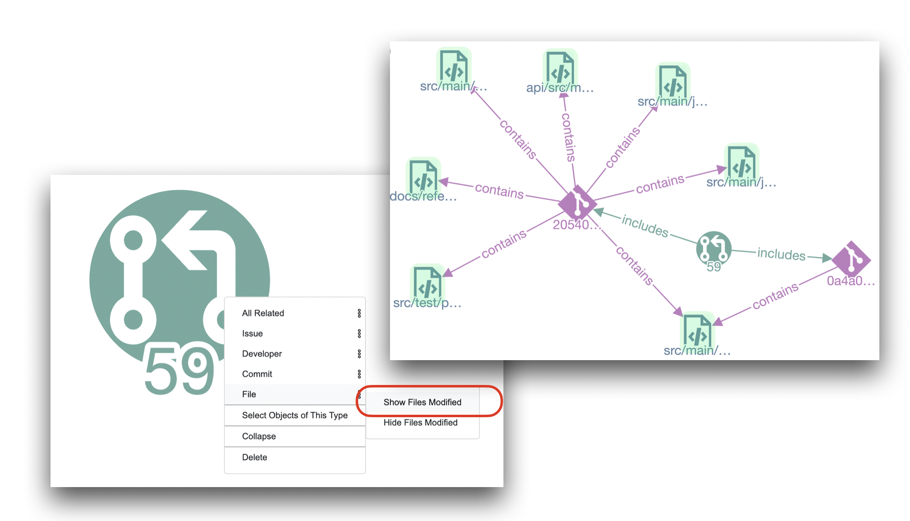
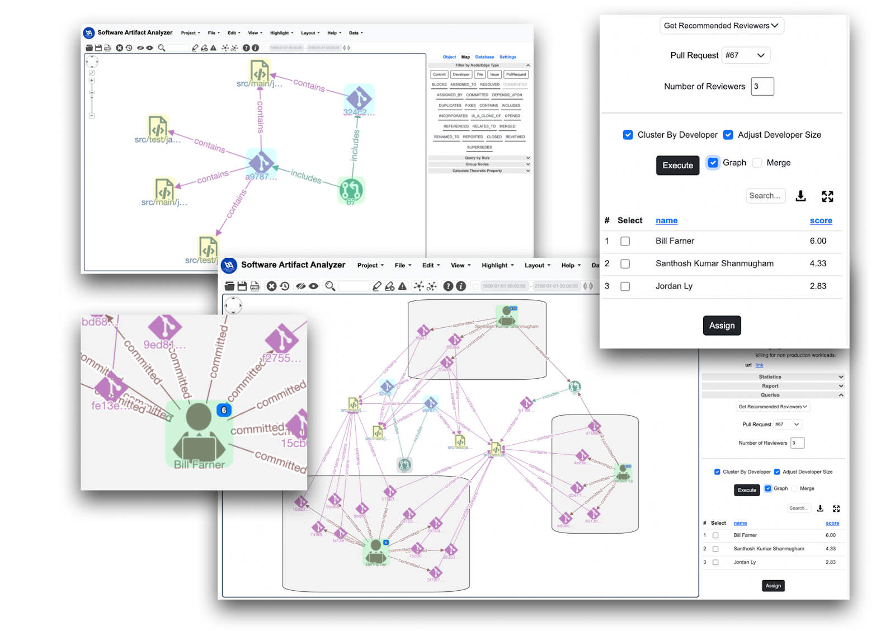
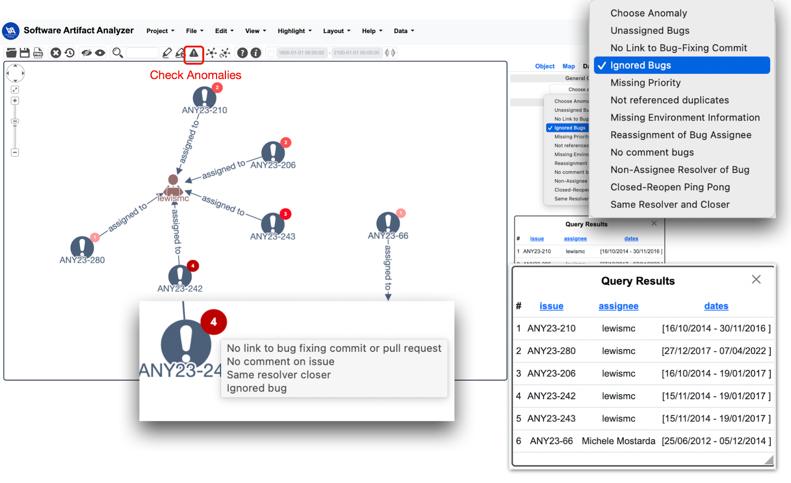
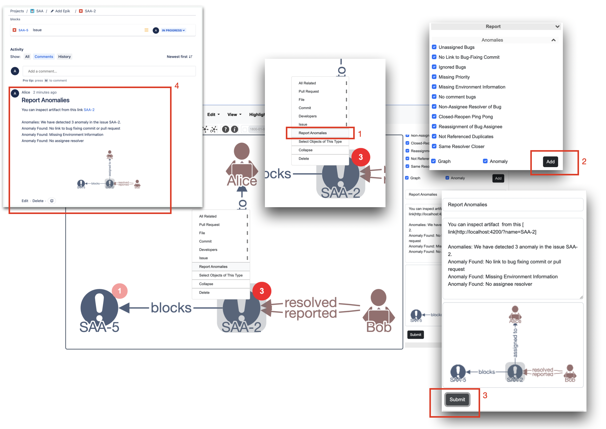

Key Features
- Context Menu: Implemented using the cytoscape.js-context-menus library. The context menu is specific to each node, allowing users to perform operations tailored to each software artifact and developer. Relation-based queries are used to reveal connections between different software artifacts or developers.
For instance, users can access source code files modified by the pull requests from the context menu of the pull requests.
 - Grouping Nodes: SAA facilitates the grouping of nodes based on developers, enhancing visualization to understand relationships and dynamics within a software project.
- Reviewer Recommendation: Utilizing the RSTrace+ [1] algorithm, SAA assists in making reviewer assignments, offering a visual representation of analysis results to boost confidence in decision-making.

Users can customize their view by choosing the number of recommendations to display and incorporating a recency factor for calculation. The table results furnish a list of recommended reviewers, each accompanied by their respective scores. The graph results provide the choice to display the graph either clustered by recommended developers or not. - Bug Tracking Process Anomaly Detection: SAA detects 11 types of bug-tracking process anomalies, as categorized by Qamar et al. [2], contributing to process evaluation and anomaly prevention.
 - Report Component: SAA allows users to report analysis results or observations directly on GitHub or Jira platforms, promoting seamless integration and practicality. Users can submit reports as comments under pull requests in GitHub or issue comments in Jira, enhancing collaboration and communication.

This tool empowers developers with the ability to detect anomalies, make informed decisions, and collaborate effectively within the context of their software projects.
[1] E. Sülün, E. Tüzün, and U. Doğrusöz, “RSTrace+: Reviewer suggestion using software artifact traceability graphs,” Information and Software Technology, vol. 130, p. 106455, 2021.
[2] K. A. Qamar, E. Sülün, and E. Tüzün, “Taxonomy of bug tracking process smells: Perceptions of practitioners and an empirical analysis,” Information and Software Technology, vol. 150, p. 106972, 2022. doi:10.1016/j.infsof.2022.106972